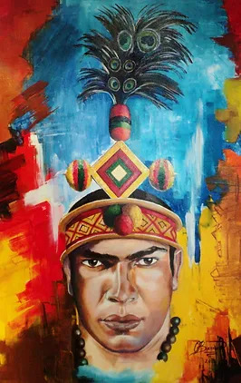
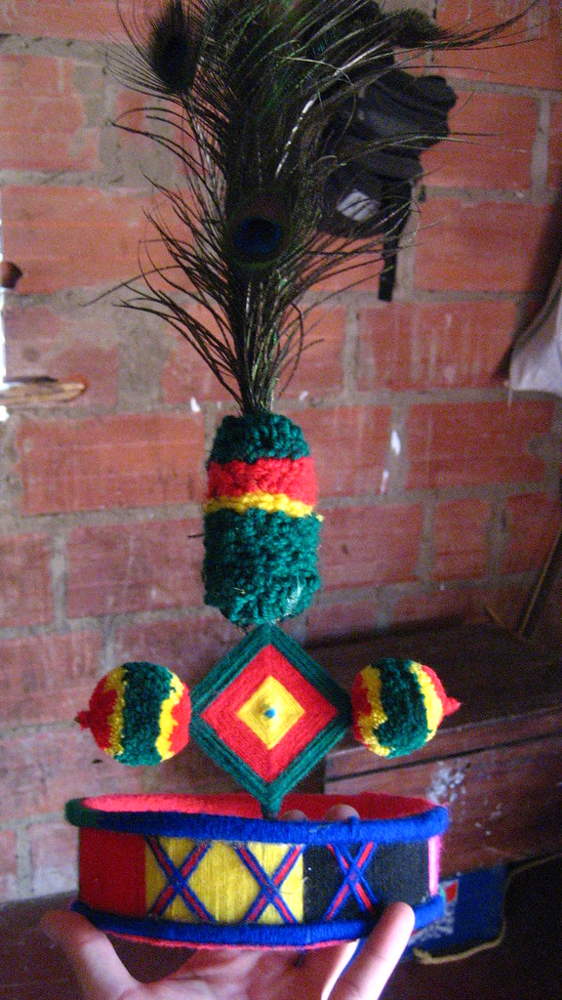

Concepto
A través de la Marca de Ciudad, El Municipio de Maicao busca implementar una estrategia de marketing territorial, orientada a generar la identificación de la Ciudad, hacer visible sus potencialidades, aumentar el flujo de comercio, inversión y mejorar los indicadores económicos y sociales, convirtiéndose en una herramienta fundamental para el desarrollo del sector turismo, la inversión y el fortalecimiento del sentido de pertenencia de los habitantes.

Cultura
Maicao mezcla influencias Wayuú, Arabes y Arijunas, destacando su espíritu emprendedor, conexión con la naturaleza, y valores de fuerza, esperanza y espiritualidad.

Economia
Ha sido el corazón del trueque y hoy sigue siendo un epicentro de pujanza Wayuú y espíritu emprendedor, adaptándose al cambio para forjar nuevas rutas económicas.

Territorio
Maicao, punto estratégico fronterizo, mezcla comercio dinámico, identidad Wayuú y adaptación al desierto.